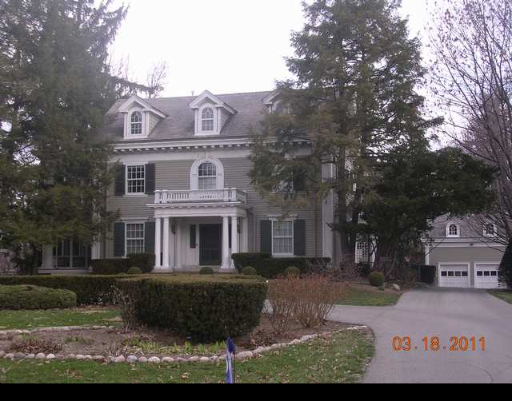

1508 E. Washington

- Sain and Gertrude Welty Residence (1909)
- Colonial Revival Style One story classical porch, temple form dormers, dentils along the fascia, center hall plan, wide pilasters at corners.
- Some call this style Neoclassic style.
- Welty was a circuit judge while presiding over a murder trial.
- Graduate of IWU law school, Yale grad, and started practicing with Gov. Joe Fifer in the 1880's.
- Later partner John Sterling went to Congress.